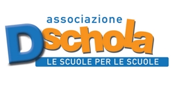

<section id="about" class="about">
  <div class="container">
    <div class="row">
      <div class="col-lg-12 text-center">
        <p class="lead"> <b>MegaCoders è  un  workshop di 3 ore su coding  e STEAM, rivolto agli  studenti  delle scuole elementari e medie.</b></p>

      <h5>   Si svolgerà negli spazi di <a href="http://www.toolboxoffice.it/en/">Toolbox Coworking</a> e <a href="http://fablabtorino.com">Fablab Torino</a>, che ospitano anche la <a href="torino.makerfaire.com">Torino Maker Faire </a> ed ha l'obiettivo di coinvolgere <b>300 giovani partecipanti</b>.</p>
I partecipanti saranno organizzati in squadre da 10 membri. Ogni squadra sarà seguita da un tutor che metterà a disposizione le proprie conoscenze su un tema a sua scelta. Ogni tutor sarà responsabile della squadra e incaricato di fornire materiali di consumo, kit e altri materiali.
La partecipazione all'evento sarà gratuita per tutti.    </p>

Mega Coder è un evento organizzato da <a href="http://www.associazionedschola.it/">Dschola</a>, <a href="http://fablabforkids.it">Fablab for kids</a> e <a href="http://www.toolboxoffice.it/en/">Toolbox Coworking</a> partecipa alla Code Week Europea 2017
<p>
</p>
</p>
      </h5>
      </div>


    </div>
    <!--
    <div class="col-sm-4 text-center">
      <a href="http://www.associazionedschola.it/"></a>
    </div>
    <div class="col-sm-4 text-center">
      <a href="http://fablabforkids.it"></a>

    </div>
    <div class="col-sm-4 text-center">
      <a href="http://www.toolboxoffice.it/en/"></a>
    </div>

  </div> /.row -->
  <!-- /.container -->
</section>
